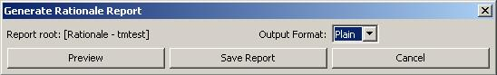
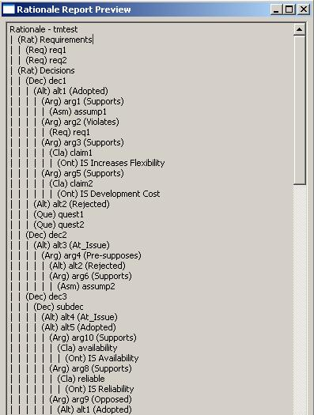

The Rationale Tree report lets the user output their entire rationale tree or some sub-tree that they select. This allows the rationale contained in a database to be viewed in a format that does not require Eclipse, the SEURAT plugin, and a loaded rationale database.
To start the dialog, the user right-clicks an element of the tree and selects "Generate Rationale Report From Here". This will generate a rationale tree report using the selected element as the root. To generate a report of the entire tree, use the top element. The following screen will then be displayed:

The user then selects which format to export the Rationale Tree in. The user can select "Preview" to bring up a view of the report in Eclipse, or "Save Report" to save the report to disk. The following is an example preview of a plain text Rationale Tree report:
